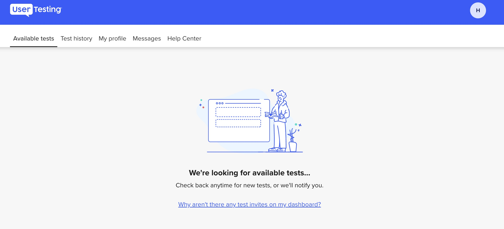

Software Solution @ Delaware Elevator, Inc.

In the summer of 2023, I collaborated on developing a new software solution integerating Power BI and Microsoft Dynamics to streamline operations and enhance analytics capabilities at Delaware Elevator, Inc.
Through this experience, I have strengthened my collaboration and critical thinking skills by resolving conflicts in a proper manner and taking a multi-step approach towards completing challenges as they arose. I have also learned how to effectively communicate with other team members to ensure that the project was working as expected and that we completed all of our tasks in a timely manner.
Spotify Community Star

Since 2018, I have been a member of the Spotify Community, a forum where users go to get help, share ideas, and collaborate with other fans. As a super user, I assist other users with troubleshooting and questions that arise with any of Spotify's services. This can range from a basic troubleshooting request such as "my Spotify app keeps crashing", to something more complex such as "how do I find an account, transfer my content over, and learn more about the AI DJ feature?". You can find all of my replies to users through my Community profile page.
Lab technician at the University of Miami

Since Fall of 2022 at the University of Miami, I have managed personal computer (PC) encryption while maintaining loaner inventory. This is a crucial department at the University, ensuring that laptops and desktops are encrypted in a timely manner, while also improving the efficency of technology management. Through this experience, I have learned fundamental time management skills, while also learning how to collaborate and solve conflicts as they arise with other co-workers. These skills being applied to my technical duties have brought me a robust work experience, while being a full-time student at the University.
UX Research and Design Initiatives
A crucial part of computing involves creating innovative software solutions that enhance the user experience. To that end, and knowing my passiobn for technology and software, I have started freelance website testing through UserTesting, Inc. providing my experience and feedback on various prototypes and mockups, to make websites better. Through that experience, I have gained critical thinking skills and public speaking skills as I regularly interact with real representatives from companies seeking feedback from their users.